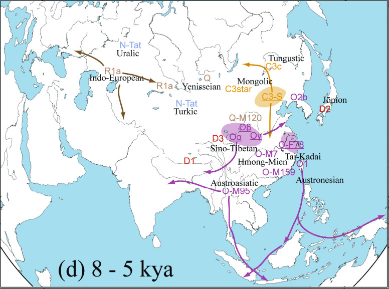

回复
谢邀。
简单说，「社会达尔文主义」是当年科技还不甚发达的情况下，通过表面（“自然”）的体质人类学、文化人类学获得的「唯物主义证据」而提出的「朴素唯种主义」理论。而到了发现DNA之后利用分子生物学手段已经可以获得更加精确的「唯物主义证据」的现在，已经与时俱进成为「鸡巴决定脑袋」的唯种辩证法和「碧池创造历史」的唯种史观了也。
网络言论管制已经收紧，所以莫谈国事只谈风月，只能说原则性话题。不特意针对任何官方和民间的知名人物，不局限于境内或境外。总之，凡是看到古今中外的任何事件中出现的主要角色，都要按照顺序辩证的考虑以下若干问题。
一、从分子生物学视角出发，这位「主角」在「唯物主义立场」上是「哪儿来的野种」？
如果觉得「野种」一词不好听，可以换为「太君」，包括但不限于「叶尼塞太君（Q1）」、「通古斯太君（C3）」、「阿拉伯太君（J）」、「尼格罗太君（E）」。
考虑到上下五千年来经常有武德充沛的外宾天命昭昭的南下/东进/西迁/北伐拎着狼牙棒到处敲费拉不堪的天灵盖，还要算上「斯拉夫太君（R1a）」、「日耳曼太君（R1b）」等等。当然，这两族太君内部还可以细分。
二、从社会人类学角度出发，这位「主角」的「种」在当地到底是「贵」还是「贱」？
虽然民间传说当中有「一洋二官三蛮四汉」的四等人制度，但那仍然是通过经验总结的「朴素唯种主义」，没有获得现代科技「唯物主义证据」的支持。应该细化到「Y染色体单倍群」标签层次排序。
比方说大概猜测的「种の分工不同と高低贵贱」（或曰“种姓制度”）差不多是这样的：
R1b＞R1a＞J＞E＞Q1＞C3＞D＞O1＞O2＞……＞O3。
若是还有知名度不高比例不大的太君，因鄙人孤陋寡闻而尚未提到，只能说实在抱歉。
三、从玄学角度出发，这位「主角」到底获得了什么「系统」提供的什么「金手指」从而开始了「开挂升级装哔打脸」的「传奇」经历呢？付出了什么「代价」呢？
这个话题其实是在其它“文学”站点讨论到的，因为总有人「曰若稽古」或「如是我闻」，不仅「以古喻今」还「以虚喻实」，用来分析现实问题的素材，包括但不限于武侠小说评书演义影视游戏动漫，甚至专门为了放风而特意炮制的网文尤其是爽文。
简单说，「作者已经决定了，由你来担任主角」，然后「系统」会发布一些「任务」，需要「主角」完成。这些任务可不都是符合社会主义核心价值观的哟，杀人放火抢劫强奸，抄家灭门，血祭，欺诈，争夺「财侣法地」以积攒「气运」……都是司空见惯，开后宫反而是附带的福利。
而「金手指」恐怕通常都有悖于社会主义精神文明建设，包括但不限于采生折割、拐卖人口、制毒贩毒、传销诈骗、走私军火、伪钞伪证、电信诈骗……而「挖社会主义墙角侵吞国有资产」还算其中比较高大上的。
当然，天上不会掉馅饼，这「主角」在获得「系统」青睐之前，多半是什么地方的「瘪三」或「屌丝」，用了「金手指」的后果，肯定是要付出一定的「代价」。这些「代价」，在网文尤其是爽文当中肯定不会提到，需要读者脑补，包括但不限于「膝盖生根头顶绿得发黑贱到骨子里去了」。
差不多先写这些吧。总结一下就是，以「社会达尔文主义」为表现形式的「朴素唯种主义」，已经与时俱进的发展成为「鸡巴决定脑袋」的唯种辩证法和「碧池创造历史」的唯种史观，在如今仍然对现实具有重要的指导意义和先进性。
当然，可能表现形式会隐蔽一些，比如包装成「屁股决定脑袋」的唯物辩证法和「人民创造历史」的唯物史观：生产力决定生产关系，经济基础决定上层建筑，社会存在决定社会意识，下半身决定上半身，家务事决定公务事。
加一句，我是主观唯心主义世界观和贝叶斯方法论，不信仰「诡辩唯物主义」，曾经关于「种」的「唯物主义证据」提出一个可重复可证伪可见非常之科学的严肃的思想实验「薛定谔爹」（Schrödinger’s Daddy）佯谬。任何一个滴血认亲实验室都可以做实验，成本也不高，样本也很丰富。
四个对照组：
- A，亲生报告亲生
- B，亲生报告接盘
- C，接盘报告亲生
- D，接盘报告接盘
预计后续追踪报道会证实：A与C的反应一致，B与D的反应一致。
再加一句，唯心还是唯物的争论是本体论话题，在现象学的表现当中没有区别。这里我举个例子特意强调一下其中的区别，尤其是「主观唯心主义」和「诡辩唯物主义」之间的区别，各位可以体会一下。
对于分子生物学手段针对具体个人获得的结论，唯心主义者和唯物主义者都有同样的共识：样本的鸡巴处于一个全球十几大类几十小类的各种鸡巴的「混合纠缠」状态，直到滴血认亲实验室「观察」之后才会「坍缩」到其中一个「本征态」的鸡巴之上。
而主观唯心主义者比起诡辩唯物主义者来说更进一步：如果鸡巴「坍缩」的结果不令人（“意识”）满意，这受试者（“意识”）还可以说服测试者（“意识”），只要测试者出来一个代表（“意识”）「手抚后脑勺」「嚯哈哈哈工作失误了失误了」，然后插科打诨嬉皮笑脸，睁大眼睛额头亮晶晶的装蒜兼贵人多忘事，就可以让受试者的鸡巴（“物质”）从已经「坍缩」的「本征态」重新恢复为全球各种「英特纳雄耐尔」鸡巴（“物质”）「混合纠缠」的初始状态去也……你说神奇不神奇？惊不惊喜？意不意外？
被提示「政治敏感」而建议修改，好吧，引用一段政治绝对正确的经典论述：《共产党宣言》
三、社会主义的和共产主义的文献
1、反动的社会主义
（甲）封建的社会主义
法国和英国的贵族，按照他们的历史地位所负的使命，就是写一些抨击现代资产阶级社会的作品。在法国的1830年七月革命和英国的改革运动 中，他们再一次被可恨的暴发户打败了。从此就再谈不上严重的政治斗争了。他们还能进行的只是文字斗争。但是，即使在文字方面也不可能重弹复辟时期的老调了。为了激起同情，贵族们不得不装模作样，似乎他们已经不关心自身的利益，只是为了被剥削的工人阶级的利益才去写对资产阶级的控诉书。他们用来泄愤的手段是：唱唱诅咒他们的新统治者的歌，并向他叽叽咕咕地说一些或多或少凶险的预言。
这样就产生了封建的社会主义，半是挽歌，半是谤文，半是过去的回音，半是未来的恫吓；它有时也能用辛辣、俏皮而尖刻的评论剌中资产阶级的心，但是它由于完全不能理解现代历史的进程而总是令人感到可笑。
为了拉拢人民，贵族们把无产阶级的乞食袋当作旗帜来挥舞。但是，每当人民跟着他们走的时候，都发现他们的臀部带有旧的封建纹章，于是就哈哈大笑，一哄而散。
一部分法国正统派和“青年英国”，都演过这出戏。
封建主说，他们的剥削方式和资产阶级的剥削不同，那他们只是忘记了，他们是在完全不同的、目前已经过时的情况和条件下进行剥削的。他们说，在他们的统治下并没有出现过现代的无产阶级，那他们只是忘记了，现代的资产阶级正是他们的社会制度的必然产物。
不过，他们毫不掩饰自己的批评的反动性质，他们控告资产阶级的主要罪状正是在于：在资产阶级的统治下有一个将把整个旧社会制度炸毁的阶级发展起来。
他们责备资产阶级，与其说是因为它产生了无产阶级，不如说是因为它产生了革命的无产阶级。
因此，在政治实践中，他们参与对工人阶级采取的一切暴力措施，在日常生活中，他们违背自己的那一套冠冕堂皇的言词，屈尊拾取金苹果，不顾信义、仁爱和名誉去做羊毛、甜菜和烧酒的买卖。
正如僧侣总是同封建主携手同行一样，僧侣的社会主义也总是同封建的社会主义携手同行的。
要给基督教禁欲主义涂上一层社会主义的色彩，是再容易不过了。基督教不是也激烈反对私有财产，反对婚姻，反对国家吗？它不是提倡用行善和求乞、独身和禁欲、修道和礼拜来代替这一切吗？基督教的社会主义，只不过是僧侣用来使贵族的怨愤神圣的圣水罢了。
就是说，「革命导师」圣卡尔和圣腓特烈早在××年前就指出，「种の分工不同と高低贵贱」这种反动腐朽的「种姓制度」，会摇身一变伪装成「社会主义」的一种形式，并且明确命名为「封建社会主义」放在「反动的社会主义」分类之下。
没有理论指导的情况下，人民群众只知道自己是「贱种」而党和国家领导人是「贵种」，有了自然科学和社会科学先进性理论的指导，就知道「贵种」的「臀部」（俗称「屁股」）所带有的「旧的封建纹章」，在分子生物学角度称为「Y染色体单倍群」（俗称「鸡巴」）。
于是，人民群众用先进的理论武装自己的头脑，就会从「屁股决定脑袋」的唯物辩证法和「人民创造历史」的唯物史观，转向「鸡巴决定脑袋」的唯种辩证法和「碧池创造历史」的唯种史观。
如果还有「贵族们把无产阶级的乞食袋当作旗帜来挥舞」，表现包括但不限于「高举什么伟大旗帜，紧密团结在以谁为核心的啥周围，为了什么光荣目标而正确奋斗」，那么，按照「革命导师」圣卡尔和圣腓特烈的预言，人民群众就会「哈哈大笑一哄而散」。
还不给过？ 那么再加几句，既然一帮逗哔自诩「科学主义」「诡辩唯物主义」却无视「当代分子生物学の唯物主义证据」，那么就不用给它们留面子了。
简单说，来自五湖四海的为了同一个反华反汉目的而走到一起来的「太君」们，要脸的自称「中华民族」企图混淆是非，不要脸的干脆鸠占鹊巢自称「汉族」。可它们丫挺的是「O3」么？不是还腆着脸往我们华夏贵胄炎黄子孙的队伍里面混，肯定有不可告人之目的。
就这么简单，凡是看见高调自称「贵种」又拿不出复旦残联下属滴血认亲实验室认证的「O3」鉴定报告的，都是「膝盖生根的头顶绿得发黑的贱到骨子里去了的光明会共济会奴才」，在境外反华反汉势力指使之下，平时讲一口流利汉语化作汉人模样混进汉人堆里看不出来，就等着到了关键时刻跳出来把脸一抹显出本相言必称巴尔干卢旺达动辄以天下大乱相威胁，为了境外主子的阴谋诡计而努力奋斗呢。
不信就从主席台前三排开始一个一个捋，看看到底有多少是各种污垢混合发酵而成的杂胡野种牛鬼蛇神，这帮「哪儿来的野种」或曰「太君」不仅是窃国大盗，还是窃族大盗，窃家大盗……居然还有脸自称「贵种」，倒打一耙贼喊捉贼喷我们汉族人是「贱种」，奇哉。
还没过？再加几句。为什么用「复旦残联下属滴血认亲实验室」这个措辞，也是在某“文学”站点引发的话题。那边有许多“文学爱好者”动辄「曰若稽古」或「如是我闻」，其中与「当代分子生物学」结合最紧密的，就是《说岳全传》相关讨论。
简单说，「铁血大送朝」除了天灵盖之外，还盛产「久经考验的积累几千年阴谋诡计之集大成者」，摇着羽毛扇捻着八字胡运筹帷幄之中决胜千里之外是拿手好戏。碰上「靖康之耻」了怎么办？好办，从复旦找个「王佐」，欲练神功挥刀自断一肢，加入「残联」，然后拿着「滴血认亲实验室」炮制的鉴定报告，去「北朝」忽悠。
第一个上当的是「认贼作父陆文龙」，被「金兀术」视若己出委以重任。这唯物主义者看见了「残疾人王佐」提供的「唯物主义证据」，立刻恍然大悟了血浓于水的道理，于是里应外合把金营搅和的稀巴烂，卷款跑路拍屁股走人，回归铁血大送朝投奔同胞去者。
第二个上当的是「弑父大傻哔曹宁」，本来随着户口本爹一起在金营混，只不过也是个唯物主义者。于是看见了「王佐」提供的唯物主义证据，立刻恍然大悟了户口本爹不是亲爹，亲爹还在南朝翘首以待。于是宰了户口本爹，伙同「陆文龙」一起里应外合把金营搅和的稀巴烂，卷款跑路拍屁股走人回归铁血大送朝去者。
只不过「弑父大傻哔曹宁」没有「认贼作父陆文龙」的好运，到了南朝之后，立刻「抑郁症发作拔剑自刎」。南朝「久经考验的积累几千年阴谋诡计之集大成者」呵呵大笑，「只不过是一块抹布而已」「没有利用价值了就让这贱种自绝于人民可也」。
这些风向都是有明确政治含义的。放风的时候，女真老巢黑龙江的省委书记是王（完颜）宪魁，省长是陆昊。结果看见「民间舆论」，「陆文龙」进退两难，反也不是不反也不是，不上不下的一直被晾到现在嘛。而最高检一把手曹建明也很久没消息了，没准已经被钦定拿下（抑郁症发作拔剑自刎）了呢。至于原因，先甭管事实如何，苍蝇不叮无缝的蛋，被形容为「弑父大傻哔」，想必事出有因。
总之，既然这上海滩著名高等学府盛产「残疾人」，擅长开具「薛定谔爹」公证书，还动辄「手抚后脑勺」，那么在网友心目中就是「复旦残联下属滴血认亲实验室」的形象，那是理所当然的喽。
继续，如果要确保审核通过，那么每篇回复只要「今天天气哈哈哈」七个字就写完了。于是迄今为止「知乎1500万个问题5500万个回答」应该只有四万万五千万字左右，很节省存储空间和流量嘛。
言归正传，就说这个「汉」吧，大概有汉朝、汉家、汉族、汉语、汉字、汉文化几种主要含义，这些含义不见得互相兼容。注意「汉家自有法度本霸王道杂之奈何纯用儒术」当中的「汉家」，指的是建立「汉朝」的「刘邦家」，而「汉族」公认形成于「刘彻执政时期」。
于是被统治阶级「汉族」与统治阶级「汉家」未必是「同胞」，江西海昏侯墓尸体挖出来这么久，也没见到复旦残联下属滴血认亲实验室跳出来公开「刘贺」的「鸡巴」，想必是「国家机密」，爆出来也会被「全网查删」，爆料行为就会涉嫌「颠覆国家政权」。
而「汉族」讲「汉语」写「汉字」，并不是因为「汉家」讲汉语写汉字，也没有「汉家」大力推广普通话的历史记载。很明显，因为「汉家」人与其它「汉族」人一样，使用的先秦普通话「雅言」就是周王室的语言，是姬部落的语言，是「O3」自己的传统。
因此，无论「汉家」是「哪儿来的野种」，都不影响「汉族」保持自己的传统。但是「汉族」要想明白，自己有义务维护自己的利益，保持自己的语言文化传统，但是没有义务扶保这统治阶级「汉家」的朝廷。
尤其是「太君」当政，阶级与种族重合的种姓制度之下，汉族面对的是阶级压迫和民族压迫的双重压迫，这要是再「忠心耿耿任劳任怨为了啥虚无缥缈的名词努力奋斗」，那真是「膝盖生根的头顶绿得发黑的贱到骨子里去了的光明会共济会奴才」吖。
知道过不了，那么补充关于「种」的「唯物主义结论」，也是复旦残联下属滴血认亲实验室认定过的「中国人の先祖」：
中国人の先祖_(b)

中国人の先祖_(d)
注意这两幅图上面的地理环境都不正确，当时没有「中原」，黄河在开封入海甚至还没到河南，而「华北平原」是浅海滩涂沼泽，所以「C3通古斯太君」迁移路线仅供参考，不惮以最大的恶意揣测还可以认为是复旦残联下属滴血认亲实验室拍脑袋编出来的。
第一幅图（b）显示了约两万年前的「中国人」。「O3」进军关中平原，这就是「华夏族」先祖。而「O1」「O2」则在长江珠江流域发展，后来「楚国」自称「我蛮夷也」，就是与「华夏族」划清界限，哪怕承认「入夏则夏入夷则夷」，先秦的「南方人」还就不是「中国人」。
第二幅图（d）显示了传说三皇五帝时期的「中国人」。「O3」已经分化成三大支，除了炎黄之外，可能还有蚩尤（存疑）。而除了「O1」的一支（F78）在长三角立足之外，其它小部落都默默无闻也没有开枝散叶。
好了，两万年前的「Q」，还在北亚晃荡，后来被命名为「叶尼塞太君」。而五千年前的「Q1」才到河套地区，这是「真·鞑虏」。而「C3」倒是盘踞满洲，一支北上直奔贝加尔湖，后来被命名为「通古斯太君」；另一支南下混入中原「万方」当中。
在其它站点的发言提到了，用不着拿啥「中华民族大家庭」洗地，在科技昌明的现在，复旦残联下属滴血认亲实验室出具的唯物主义证据要多少有多少。那么「汉族固有的C3」在中国历史上如何参与政治斗争，是「鸡巴决定脑袋」团结同胞「阿尔泰系的C3」引狼入室呢，还是「屁股决定脑袋」以汉族自居抵抗异族侵略呢？
这时候就会发现，「唯物主义证据」与不惮以最大恶意「唯心」揣测不谋而合，果然血浓于水，「皇协军」给「皇军」带路顺理成章，不以我等善良汉族人的啥「民族团结一家亲」的幼稚愿望为转移。
所以，说过了人民群众只要用先进的理论武装自己的头脑，就一定会从「屁股决定脑袋」的唯物辩证法和「人民创造历史」的唯物史观，转向「鸡巴决定脑袋」的唯种辩证法和「碧池创造历史」的唯种史观，面对「种の分工不同と高低贵贱」的「种姓制度」，面对趾高气昂的「贵种」轻蔑的称呼「党既不需要贱种的支持也不在乎贱种的反对，国既用不着贱种来爱也轮不到贱种去卖，太平洋没加盖，井冈山依然在」……就会选择「哈哈大笑一哄而散」。这是官方「高音喇叭」和民间「自带干粮的爱国贼」循环播放多少次煽动言论都无法扭转的现实民意基础。
继续，上面明确阐述了「鸡巴」的作用，而「碧池」还没有提到，下面展开说明。
先看「科技昌明」之前的记载，虽然没有「唯物主义证据」，但是也存在「薛定谔爹」的情况，历史上的接盘侠不乏名人，乃至一把手。
比方说「帖木儿·金」，就是俗称「铁木真」的那个「成吉思汗」，老婆被抢走，抢回来的时候买一送一，只能捏着鼻子认了「朮赤」。当然，蒙古传统风俗习惯是「幼子守灶」，前面一堆「儿子」都打发出去到处游盗，再加上「各种污垢混合发酵而成」的惯例，所以没什么影响。
而到了建立在宗法制度之上的中原就不一定了，即便捏着鼻子认账，也会有一堆后遗症。当然，认账与否不仅仅是接盘侠个人奋斗，还要考虑到历史的进程。比方说「魏晋风度」，「曹孟德司马仲达父子」仅凭「狐媚」就能得天下，也不是没有代价的嘛，正应了「文学爱好者」们用「系统」「金手指」「钦定主角」放风。
前一个接盘侠比较知名，曹丕，接盘了甄姬连带袁熙的遗腹子，无论正史还是野史都有很多明显的证据。最有力的一条，就是曹丕挂了之后，群臣不许曹睿送葬，而汉献帝挂了曹睿倒是能扶灵，奇哉。为什么众所周知的野种还能接班，那是因为「系统」规定了，「主角」不接盘「金手指」就没了，于是不能如同本位面历史上那样迅速平定河北，和平接收「反派」袁绍的势力。
然后，「系统」看第一季主角「曹家」企图摆脱控制，「袁睿」亲生儿子都挂了不能接班，不能继续接下来的「翻盘」剧情，于是怒了。在「作者最大剧本钦定导演叫人三更死谁敢留人到五更」的指导原则之下，第二季主角「司马家」出场，后面的事情我们都知道了。
后一个接盘侠其实知名度不高，司马觐，那是因为风头被「哪儿来的野种」儿子「司马睿」抢了。民间传说「牛继马后」于是「牛金」冤死但「天道有常」还能「纠正偏离的历史轨迹」，肯定不是空穴来风。
同理可证，「系统」又看见第二季主角「司马家」企图摆脱控制，竟敢做掉第三季钦定主角「牛金」，于是又怒了。但是同样的套路反复上演，会影响票房的哟。那么就换个套路吧，既然贵「牛」你们不要，那换个贱「牛」去搞你家女人吧。
还是在「作者最大剧本钦定导演叫人三更死谁敢留人到五更」的指导原则之下，女主贾南风戏份超出预计，接班人蠢到「何不食肉糜」，王八之乱你方唱罢我登场，江山社稷一片糜烂……于是第三季钦定主角「牛睿」还是按剧本顺利接班了嘛。「何物演员，敢共作者编剧导演作色，举之则使上天，按之当使入地！」
总之，「碧池」的作用比「鸡巴」还要大，毕竟唯物的鸡巴只能通过影响宿主唯心的意识的方式改变历史走向，而「碧池」除了用下半身代表了先进的生产力之外，上半身还能发挥主观能动性呢。所以嘛，「碧池」角色，一向是作者编剧导演们所钟爱的，包括但不限于芈月吕雉贾南风武则天慈禧。
喝多了回来了，继续。
如果把视角放大到整个地球，与中国乃至旧大陆抹不开关系的，就是当年的「可萨汗国」，这一小撮杂胡野种牛鬼蛇神，整整折腾了「大陆岛」十几个世纪之久，迄今为止其祸害仍然存在。
简单说，突厥被我们「中国人」打跑之后，就在高加索附近扎根，以「阿史那」为首的游盗部落高层，被「希伯来太君」忽悠着改信了「犹太教」。在可萨汗国内部仍然是种姓制度，统治阶级是「白可萨」，被统治阶级是「黑可萨」。
后来的事情都知道了，因为拜占庭驱逐犹太人，可萨汗国驱逐基督徒作为报复，然后可萨汗国就被拜占庭伙同基辅罗斯一起给灭了。然后，「白可萨」向西迁移到中欧，混入「阿什肯纳齐」，「黑可萨」留在原地皈依了绿教。
所以，在如今科技昌明的现在，已知领导曼哈顿计划的核弹之父「奥本海默」这种「阿什肯纳齐」都是「Q1叶尼塞太君」，可见当时中欧「阿什肯纳齐」当中有多少可萨余孽，它们与斯拉夫民族的仇恨，延续了上千年不止。
就看革命导师圣腓特烈《匈牙利的斗争》当中，明确的把除了波兰人之外的斯拉夫民族都定性为「反动民族」叫嚣着非得种族灭绝才算革命进步，也知道这种仇恨到底有多么的刻骨铭心。波兰是个10%贵族20%犹太人的奇葩国家，已经被希伯来太君彻底渗透了，作为「膝盖生根的头顶绿得发黑的贱到骨子里去了的光明会共济会奴才」当然放心。所以后来才有「苏联是社会主义阵营的老大哥，波兰是苏联的爹，北京是中共的亲儿子，上海是中共的爹」之类说法。
具体到兲朝，这些可萨余孽几百年来仍然上蹿下跳，但是会换马甲打掩护。比方说「十蛔捧猪」的传言，说这大萌朝猪皇帝作为一个「乞丐」能「屌丝逆袭」是因为抱上了「系统」的大腿获得「金手指」于是开始了「装哔打脸开挂升级」的「钦定主角」历程。
如果从「唯物主义证据」角度分析，大萌朝猪皇帝极有可能是「Q1叶尼塞太君」，因为可萨汗国的关系，与闪米特独神论邪教有着不可分割的联系，「摩尼教」背景就是「系统」的存在方式，而「十蛔捧猪」是「金手指」提供的「锁定忠诚」的奴才。并且，最有力的证据，就是大萌朝「优待宗室」不惜「践踏人世间一切法律和道德」已经到了丧心病狂的程度。这不像是东方传统，更像是塔纳赫当中记载的「你们要多多生养遍布大地」的闪米特独神论邪教的宗旨。
因此，我这个主观唯心主义者贝叶斯革命战士猜测，大萌朝猪皇帝及其家族，按照父系计算是「Q1叶尼塞太君」，按照母系计算是「闪米特太君」，可以根据形势随时向着希伯来和阿拉伯两个方向站队，这帮来自五湖四海的各种污垢混合发酵而成的杂胡野种牛鬼蛇神为了反汉反华对中国土著进行种族灭绝的同一个反动目的走到一起来，为了颠覆我中华兲朝上国的不可告人之目的而努力奋斗。